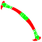
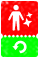

Home › Items
Materials Live
Plants, wood, animal parts, stone, ore, metal, processed materials, seeds and fertilizer — where to gather them, what they're made of, examples with icons
Some sections on this page are not ready yet
Materials go into the slots of crafting, cooking and building recipes — each slot asks for a tag, any item with a matching tag fits, and the main material's attributes carry over to the result.
Plants and wood
Gather with bare hands, a knife, an axe or a saw (Gathering) · 32 obtainable
| Name | Max level | Where from | |
|---|---|---|---|
| Bamboo Stalk | 60 | Gather from Bamboo · Faction supplies | |
| Giant Leaf | 60 | Gather from Nest Fern Plant, Large Bird of Paradise, Palm Tree and more | |
| Branch | 60 | Crafting bonus (Break Hardened Lava) · Gather from Raspberry Bush, White Sandalwood, Bramble and more · Farming (Spider Web Tree · Halloween only) · Attendance · Faction missions · Season Pass · Faction supplies | |
| Long Branch | 60 | Craft (hands) · Gather from Horn Tree | |
| Broad Leaf | 60 | Gather from Raspberry Bush, White Sandalwood, Bramble and more | |
| Solid Branch | 60 | Gather from Fir Tree, Moss-Covered Tree | |
| Flax Stalks | 60 | Gather from Flax · Farming (Flax) | |
| Sugar Cane Stalk | 60 | Gather from Sugar Cane · Farming (Sugar Cane) | |
| Log | 60 | Crafting bonus (Break Hardened Lava) · Gather from White Sandalwood, Rotten Log, Mangrove and more · Attendance · Faction supplies | |
| Coniferous Log | 60 | Gather from Pine Tree, Fir · Faction supplies | |
| Swamp Log | 60 | Faction supplies | |
| Sap | 60 | Gather from Red Fir, Pine Tree · Season Pass · Faction supplies | |
| Cotton | 60 | Gather from Cotton Plant · Farming (Cotton Plant) · Faction supplies | |
| Moss | 60 | Gather from Moss-Covered Tree | |
| Respiratory Root | 60 | Gather from Mangrove · Faction supplies | |
| Solid Root | 60 | Gather from Moss-Covered Tree · Faction supplies | |
| Bark | 60 | Faction supplies | |
| Lotus Leaf | 60 | Gather from Lotus Flower | |
| Leaf | 60 | Gather from Ring Vine, Reed, Crabgrass and more · Faction supplies | |
| Needle Leaf | 60 | Gather from Red Fir, Pine Tree, Fir · Faction supplies |
Animal parts
Butchered from carcasses — the kinds and amounts depend on the animal (Wild animals) · 33 obtainable
| Name | Max level | Where from | |
|---|---|---|---|
| Large Skull | 60 | Crafting bonus (Break Hardened Lava) · Butcher (animals 7 kinds) · Faction supplies | |
| Spider | 60 | Farming (Spider Web Tree · Halloween only) | |
| Large Leg Bone | 60 | Crafting bonus (Break Hardened Lava) · Butcher (animals 43 kinds) · Season Pass · Faction supplies | |
| Carnivore Leg Bone | 60 | Butcher (animals 34 kinds) · Faction supplies | |
| Carnivore Skull | 60 | Faction supplies | |
| Ivory | 60 | Crafting bonus (Break Hardened Lava) · Butcher Mammoth, Elephant · Faction supplies | |
| Rib | 60 | Crafting bonus (Break Hardened Lava) · Season Pass · Faction supplies | |
| Pointy Rib | 60 | Warp Accelerator | |
| Carnivore Rib | 60 | Butcher (animals 13 kinds) · Faction supplies | |
| Poison Sac | 60 | Butcher (animals 6 kinds) · Faction supplies | |
| Leg Bone | 60 | Crafting bonus (Break Hardened Lava) · Gather from Scorched Bone Pile, Bone Pile, Scorched Bone Graveyard and more · Butcher Phenacodus, Macrauchenia · Attendance · Season Pass · Faction supplies | |
| Leather | 60 | Butcher (animals 58 kinds) · Attendance · Season Pass · Faction supplies | |
| Thick Leather | 60 | Warp Accelerator · Faction supplies | |
| Skull | 60 | Butcher (animals 27 kinds) · Faction supplies | |
| White-Striped Scale | 60 | Faction supplies | |
| Horn | 60 | Gather from Bone Graveyard · Butcher (animals 14 kinds) · Faction supplies | |
| Teeth | 60 | Butcher (animals 35 kinds) · Faction supplies | |
| Tendon | 60 | Butcher (animals 9 kinds) · Attendance · Faction supplies | |
| Small Bone Plate | 60 | Butcher (animals 3 kinds) | |
| Egg | 60 | Gather from 동물의 알 · Attendance · Faction supplies · Pets |
Names by species Not ready
Parts you butcher from carcasses and items from animals caught in traps carry the name of the animal they came from (e.g. «Tyrannosaurus Leather», «Mammoth Pelt») · some gathered wood and plants (logs, branches, stems, roots, sap and so on) are named after the plant they came from too · each species gives its own species attribute to the item, and some furniture recipes need a part from one specific species · old items already in your bag keep their generic name · you can search the Market by animal name (Searching by species name) — details in Source names on butchered materials
Stone, ore and metal
Stone and ore need a pickaxe or hammer — each ore node gives only its own ore or gem · ore smelted at a Kiln becomes the metal of its name (Iron Ore → Iron), and alloys are smelted there too · Gemstones must be extracted into gems first, then polished at a Gem Crafting Bench (Smelting gives metal · Extracting and polishing gems) · 42 obtainable
| Name | Max level | Where from | |
|---|---|---|---|
| Sulfur | 60 | Crafting bonus (Break Hardened Lava) · Faction supplies | |
| Saltpeter | 60 | Faction supplies | |
| Free Cutting Brass | 60 | Faction supplies | |
| Copper | 60 | Craft (Kiln) · Faction supplies | |
| Topaz | 60 | Gather from Topaz Ore (crater caches on Unstable Islands) · Faction supplies | |
| Zinc Ore | 60 | Crafting bonus (Break Hardened Lava) · Gather from Zinc Ore · Warp Accelerator · Season Pass | |
| Hardened Lava | 60 | Faction supplies | |
| Bronze | 60 | Craft (Kiln) · Faction supplies | |
| Basalt | 60 | Craft (hands) · Gather from Basalt · Faction supplies | |
| Granite | 60 | Gather from Granite · Faction supplies | |
| Silver | 60 | Craft (Kiln) · Faction supplies | |
| Iron | 60 | Craft (Kiln) · Faction supplies | |
| Steel | 60 | Craft (Kiln) · Faction supplies | |
| Black Iron Ore | 60 | Crafting bonus (Break Hardened Lava) · Gather from Black Iron Ore · Warp Accelerator · Faction supplies | |
| Pebble | 60 | Gather from Pebble, Boulder, Large Boulder and more · Attendance · Faction supplies | |
| Stone Chunk | 60 | Craft (Workbench) · Gather from Boulder | |
| Emerald | 60 | Craft (Workbench) | |
| Marble | 60 | Gather from Marble · Faction supplies | |
| Obsidian | 60 | Gather from Obsidian · Faction supplies | |
| Gold Ore | 60 | Crafting bonus (Break Hardened Lava) · Gather from Gold Ore · Warp Accelerator | |
| Copper Ore | 60 | Crafting bonus (Break Hardened Lava) · Gather from Copper Ore · Warp Accelerator · Season Pass · Faction supplies | |
| Silver Ore | 60 | Crafting bonus (Break Hardened Lava) · Gather from Silver Ore · Warp Accelerator | |
| Mud | 60 | Gather from Mud Pit, Gray Mud · Season Pass · Faction supplies | |
| Gray Mud | 60 | Crafting bonus (Break Hardened Lava) · Gather from Gray Mud · Faction supplies | |
| Pearl | 60 | Crafting bonus (Break Hardened Lava) · Gather from Clam |
Building materials
Wall, floor and roof panels (wood, stone, leather), nails, hinges, doors, windows, leather cord and so on · 57 obtainable
| Name | Max level | Where from | |
|---|---|---|---|
| Long-Cut Bone | 60 | Craft (hands) · Faction supplies | |
| Stone Wall | 60 | Craft (Workbench) | |
| Metal Nail | 60 | Craft (Kiln) · Shop (Metalworking Package 300 Warp Gems, Polished Patterned Stone Wall 15 Durango Coins and more) · Faction supplies | |
| Rock Hinge | 60 | Craft (Workbench) | |
| Polished Patterned Stone Wall | 60 | Shop (Polished Patterned Stone Wall 15 Durango Coins) | |
| Shaped Wooden Plank Wall | 60 | Craft (Workbench) | |
| Patterned Stone Floor | 60 | Craft (Workbench) | |
| Shaped Wooden Plank Floor | 60 | Craft (Workbench) | |
| Leather Strap | 60 | Craft (hands) · Attendance · Faction supplies | |
| Leather Roof | 60 | Craft (Workbench) | |
| Straight Wooden Door Frame | 60 | Craft (Workbench) | |
| Adhesive Accessory | 60 | Craft (Workbench) · Faction supplies | |
| Multipurpose Wide Square Sprinkler Plan | 60 | Faction supplies | |
| Thunderstruck Wooden Plank | 60 | Shop (Sturdy Gift Box Basic Package 50 Warp Gems, Sturdy Gift Box Premium Package 400 Warp Gems) | |
| Exquisite Bone Door | 60 | Craft (Workbench) | |
| Exquisite Wooden Door | 60 | Craft (Workbench) | |
| Bone Lattice | 60 | Craft (Workbench) | |
| Steel Window | 60 | Craft (Workbench) |
Weapon and tool parts
Handles, blades, hammer heads, bowstrings and so on · 71 obtainable
| Name | Max level | Where from | |
|---|---|---|---|
| Air Bladder Glue | 60 | Craft (Workbench) | |
| Handle | 60 | Craft (hands) · Faction supplies | |
| Crossbow Body | 60 | Craft (Workbench) · Faction supplies | |
| Dual-layered Bow Limb | 60 | Craft (Kiln) · Faction supplies | |
| Dual-layered Crossbow Limb | 60 | Craft (Kiln) | |
 | Bone Crossbow Limb | 60 | Craft (Weapon Workbench) |
| Angled Metal Axe Head | 59 | Craft (Kiln) | |
| Large Stone Axe Head | 39 | Craft (Workbench) | |
| Large Angled Metal Axe Head II | 60 | Craft (Kiln) | |
| Head Crusher Hammer Head | 59 | Craft (Weapon Workbench) | |
| Large Thorny Spine Hammer Head | 59 | Craft (Kiln) | |
| Bone Spearhead | 39 | Craft (Workbench) | |
| Bone Pickaxe Head | 44 | Craft (Workbench) | |
| Metal Stirrup | 60 | Faction supplies | |
| Bone Hoe Blade | 44 | Craft (Workbench) | |
| Bent Bone Knife Blade | 60 | Craft (Weapon Workbench) | |
| Stone Blade | 60 | Craft (hands) · Faction supplies | |
| Metal Saw Blade | 60 | Craft (Kiln) |
Sewing materials
Thread, cloth, tanned leather · 26 obtainable
| Name | Max level | Where from | |
|---|---|---|---|
| Trimmed Bone | 60 | Faction supplies | |
| Processed Bone | 60 | Faction supplies | |
| Gelatin Glue | 60 | Craft (Workbench) · Faction supplies | |
| Durable Fabric | 60 | Craft (Loom) · Faction supplies | |
| Thick Fabric | 60 | Craft (Loom) · Faction supplies | |
| Long Rope | 60 | Craft (hands) · Faction supplies | |
| Dried Leather Strap | 60 | Craft (hands) · Faction supplies | |
| Dried Leather | 60 | Craft (Drying Rack) · Faction supplies | |
| Tanned Pelt | 60 | Craft (Drying Rack) · Faction supplies | |
| Tanned Leather | 60 | Craft (Drying Rack) · Faction supplies | |
| Metal Accessories | 60 | Craft (Workbench) · Shop (Metalworking Package 300 Warp Gems) · Faction supplies | |
| Rope | 60 | Craft (hands) · Attendance · Faction supplies | |
| Thread | 60 | Craft (Loom) · Attendance · Faction supplies | |
| Greasy Thread | 60 | Craft (Loom) | |
| Coarse Thread | 60 | Craft (Loom) | |
| Metal Stick | 60 | Craft (Kiln) · Faction supplies |
Other materials
11 obtainable
| Name | Max level | Where from | |
|---|---|---|---|
| Appearance Change Card | 1 | Shop (110 Durango Coins) | |
 | Gender+Appearance Change Card | 1 | Shop (220 Durango Coins) |
| Skill Reset Ticket | 1 | Shop (200 T Stone) | |
| Metal Chunk | 60 | Faction supplies | |
| Vinyl Fabric | 60 | Crafting bonus (Break Hardened Lava) · Gather from Car | |
| Piano Wire | 60 | Gather from Lost Package | |
| Wax | 60 | Faction supplies | |
| Tire | 60 | Crafting bonus (Break Hardened Lava) · Gather from Car | |
| Grafted Cherry Tree Root | — | Not obtainable yet | |
| Grafted Donarium Cherry Tree Root | — | Not obtainable yet | |
| Lock | 60 | Craft (Kiln) · Gather from Lost Package | |
| Candle | — | Not obtainable yet | |
| Glass Shard | 60 | Crafting bonus (Break Hardened Lava) · Gather from Lost Package, Car · Season Pass | |
| Torn Plan | 60 | Shop (20 Warp Gems, 10 for 150 Warp Gems) · Faction supplies |
Seeds
Plant them in farm plots; each harvest gives the produce plus seeds back (at least 1, depending on the plant and fertilizer — Harvest) · you must learn a seed's skill before planting it (except Corn, Apple and some special seeds) · event seeds can only be planted during their event (Learn the skill before planting) · starting seeds come from faction supplies · some wild plants drop seeds (Tea Tree, Flax, Wild Rose, Bell Pepper Tree) · Corn Seeds also come from Lost Packages and from pets · flower and Halloween seeds come from events · the Season Pass gives Mr. Lincoln Rose Seeds · many seeds can't be obtained right now · 24 obtainable
| Name | Max level | Where from | |
|---|---|---|---|
| White Rose Seed | 1 | Home Party event (May 1 – May 31) | |
| Rose Seed | 60 | Gather from Wild Rose | |
| Seed Potato | 60 | Faction supplies | |
| Banana Seed | 60 | Faction supplies | |
| Coffee Seed | 60 | Faction supplies | |
| Rice Seed | 60 | Faction supplies | |
| Wheat Seed | 60 | Faction supplies | |
| Corn Seed | 60 | Gather from Lost Package · Faction supplies · Pets | |
| Carnation Seed | 1 | Home Party event (May 1 – May 31) | |
| Tea Tree Seed | 60 | Gather from Tea Tree · Faction supplies | |
| Cotton Plant Seed | 60 | Faction supplies | |
| Bean Seed | 60 | Faction supplies | |
| Flax Seed | 60 | Gather from Flax, Tropical Flax · Faction supplies | |
| Pumpkin Seed | 60 | Faction supplies | |
| Tomato Seed | 60 | Faction supplies | |
| Fig Seed | 60 | Faction supplies | |
| Onion Seed | 60 | Faction supplies | |
| Grape Seed | 60 | Faction supplies | |
| Sugar Cane Seed | 60 | Faction supplies | |
| Jasmine Seed | 1 | Jasmine Farm event (Aug 1 – Aug 31) |
Fertilizer
Put it on plots for a bigger harvest (it does not make crops grow faster) · the amount per piece is in Fertilizer and yield · 8 obtainable
| Name | Max level | Where from | |
|---|---|---|---|
| Quality Fertilizer | 60 | Craft (Fermentation Board) · Faction supplies | |
| Primitive Fertilizer | 60 | Craft (Fermentation Board) · Faction supplies | |
| Liquid Fertilizer | 60 | Craft (Fermentation Board) · Shop (Multipurpose High-Pressure Sprinkler 190 Durango Coins) · Faction supplies | |
| Quality Grain Fertilizer | 60 | Faction supplies | |
| Fruit Fertilizer | 60 | Faction supplies | |
| Grass Fertilizer | 60 | Faction supplies | |
| Quality Meat Fertilizer | 60 | Faction supplies |